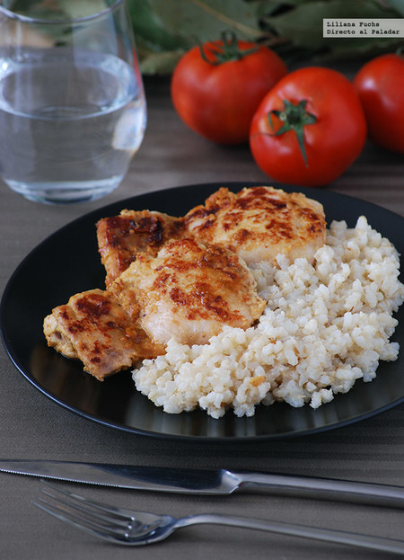

Pollo con Arroz Integral

El pollo con arroz integral es una de las comidas fitness más completas y populares. Combina proteínas magras, carbohidratos complejos y un excelente aporte energético, siendo ideal para quienes realizan actividad física o buscan mantener una alimentación saludable y equilibrada.